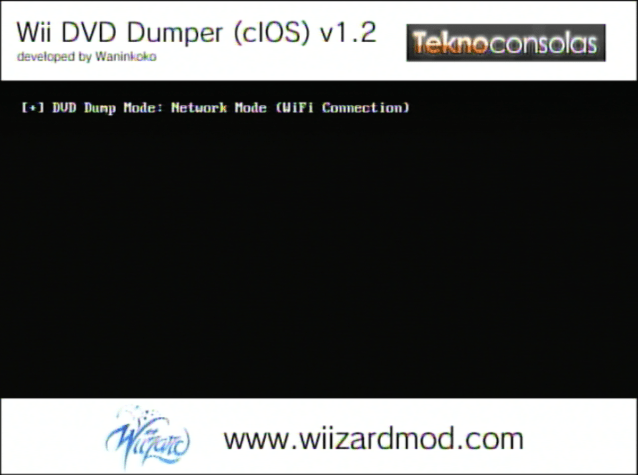

Extraire des jeux Wii/GameCube
Pour de l'assistance en anglais, veuillez demander de l'aide sur le serveur Discord de RiiConnect24.
Vous voulez extraire un disque GameCube ou un disque Wii? Il existe deux façons de le faire, selon les outils dont vous disposez.
Guide Cleanrip
Ce dont vous avez besoin
- Une carde SD ou un périphériques USB de au moin 4.7Go de d’espace libre (8.5 Go si dumping d’un disc dual layer).
- CleanRip
Instructions
Section 1 - Téléchargement/installation
- Décompressez CleanRip et mettez-le dans le dossier
appssur votre carte SD ou votre périphérique USB. - Insérez votre carte SD dans votre Wii et lancez CleanRip depuis le Homebrew Channel.
Section II - Extraction
- Sélectionnez l’appareil sur lequel vous allez extraire le jeu - votre périphérique USB ou votre carte SD.

- Sur cet écran, on vous demandera si vous voulez télécharger un fichier avec les sommes de contrôle du jeu pour vérifier si l’extraction créée est une copie conforme du disque. Vous pouvez choisir
OuiouNonpour télécharger le fichier.
- Maintenant insérez le jeu que vous voulez copier.


- Paramétrez comme sur l’image ci-dessous.
title: “CleanRip”

- CleanRip va maintenant extraire votre jeu. Cela peut prendre un certain temps, car le contenu complet du disque de 4,7 Go (9,4 pour les disques double couche) sera copié.

Extraire un jeu via un réseau local
title: “Dump des jeux Wii/GameCube via le réseau local” —
Ce dont vous avez besoin
- Une Wii.
- L’outil DVD Dump Tool
Votre Wii et votre ordinateur doivent être connectés au même réseau local
Instructions
Section I - Téléchargement et installation
- Décompressez DVD Dump Tool et mettez-le dans le dossier
appssur votre carte SD ou votre clé USB. - Insérez votre carte SD dans votre Wii, et lancez DVD Dump Tool depuis l’Homebrew Channel.
Section 2 - Extraction
- Appuyez sur le bouton gauche de la croix directionnelle et pressez « A » 
- Choisissez le disque que vous voulez copier (les options sont :
Disque GameCube,Disque Wii simple-coucheetDisque Wii double-coucheet pressez « A »
- Maintenant insérez le jeu dans votre Wii. (Si il était déjà dans votre Wii, éjectez-le et remettez-le)


- Souvenez-vous de l’URL de votre Wii (adresse IP)

- Sur votre ordinateur, tapez l’URL de la Wii dans votre navigateur internet et appuyez sur Entrée.

- Vous devriez voir ceci. Cliquez sur
Cliquez ici pour télécharger XXXX.iso
- La vitesse de transfert n’est pas la plus rapide, mais si vous ne pouvez rien utiliser d’autre, c’est mieux que rien.